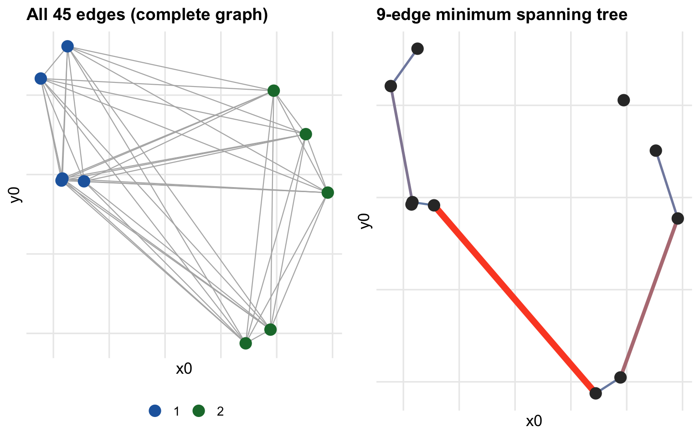

Show code
set.seed(42)
n_toy <- 10
X10 <- rbind(
cbind(rnorm(5, -2, 0.4), rnorm(5, 0, 0.4)),
cbind(rnorm(5, 2, 0.4), rnorm(5, 0, 0.4))
)
grp10 <- rep(c("1","2"), each = 5)
D10 <- as.matrix(dist(X10))
# Prim's MST on D10
prim_mst <- function(W) {
n <- nrow(W); in_mst <- logical(n); in_mst[1] <- TRUE
edges <- matrix(0L, n-1, 2); ws <- numeric(n-1)
key <- rep(Inf, n); parent <- integer(n)
key[1] <- 0
for (step in seq_len(n-1)) {
u <- which.min(ifelse(in_mst, Inf, key))
in_mst[u] <- TRUE; edges[step,] <- c(parent[u], u); ws[step] <- key[u]
for (v in which(!in_mst)) if (W[u,v] < key[v]) { key[v] <- W[u,v]; parent[v] <- u }
}
list(edges = edges[-1,,drop=FALSE], w = ws[-1])
}
mst10 <- prim_mst(D10)
all_e <- do.call(rbind, lapply(1:(n_toy-1), function(i) {
do.call(rbind, lapply((i+1):n_toy, function(j) {
data.frame(x0=X10[i,1],y0=X10[i,2],x1=X10[j,1],y1=X10[j,2],w=D10[i,j])
}))
}))
mst_e <- data.frame(
x0 = X10[mst10$edges[,1],1], y0 = X10[mst10$edges[,1],2],
x1 = X10[mst10$edges[,2],1], y1 = X10[mst10$edges[,2],2], w = mst10$w
)
pts10 <- data.frame(x=X10[,1], y=X10[,2], g=grp10)
p_all <- ggplot() +
geom_segment(data=all_e, aes(x=x0,y=y0,xend=x1,yend=y1), colour="grey70", linewidth=0.4) +
geom_point(data=pts10, aes(x,y,colour=g), size=4) +
scale_colour_manual(values=PAL) +
labs(title="All 45 edges (complete graph)", colour=NULL)
p_mst <- ggplot() +
geom_segment(data=mst_e, aes(x=x0,y=y0,xend=x1,yend=y1,linewidth=w,colour=w)) +
geom_point(data=pts10, aes(x,y), colour="grey20", size=4) +
scale_colour_gradient(low="#4292C6", high="#FC4E2A", guide="none") +
scale_linewidth_continuous(range=c(0.6,2.5), guide="none") +
labs(title="9-edge minimum spanning tree")
grid.arrange(p_all, p_mst, ncol=2)